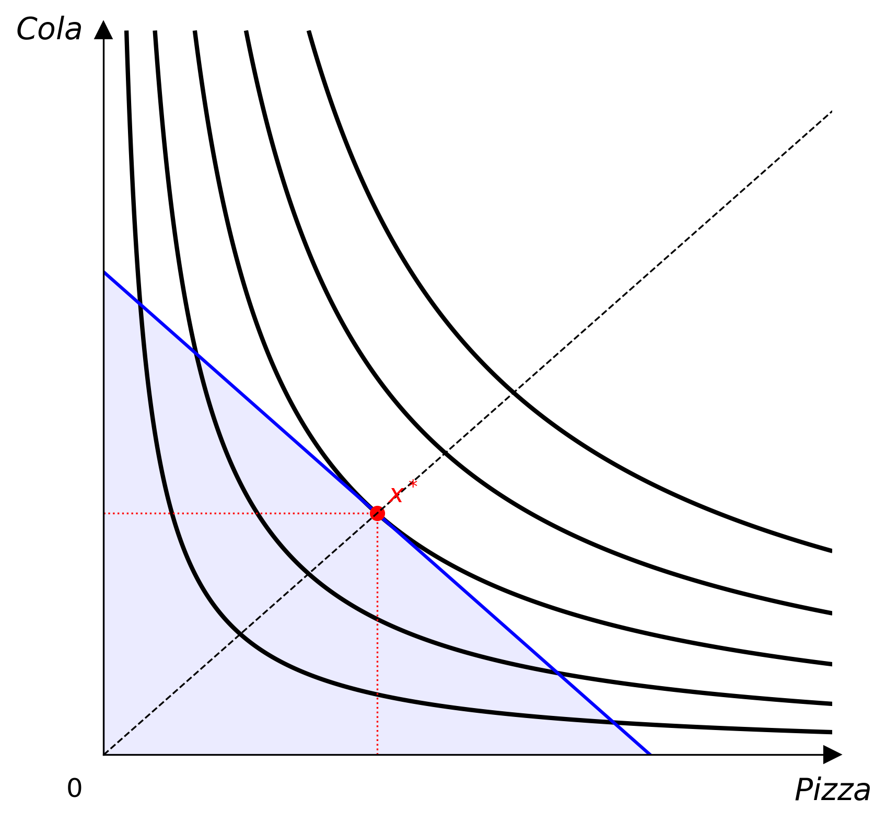
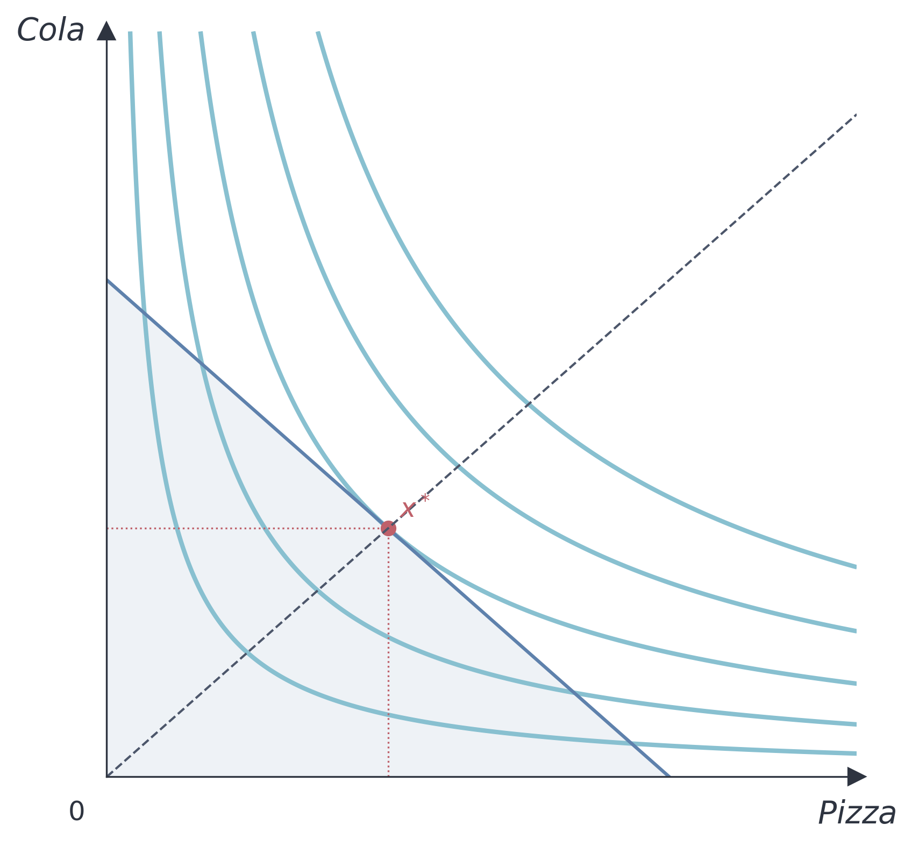
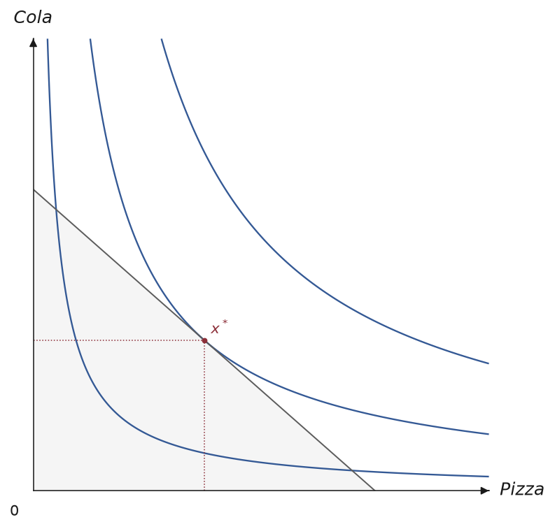
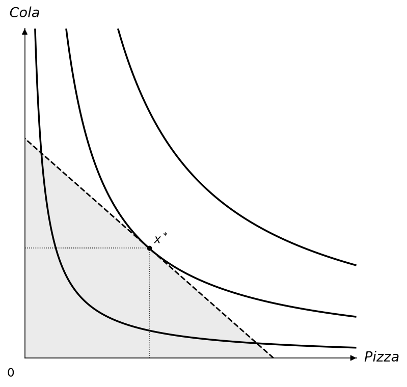
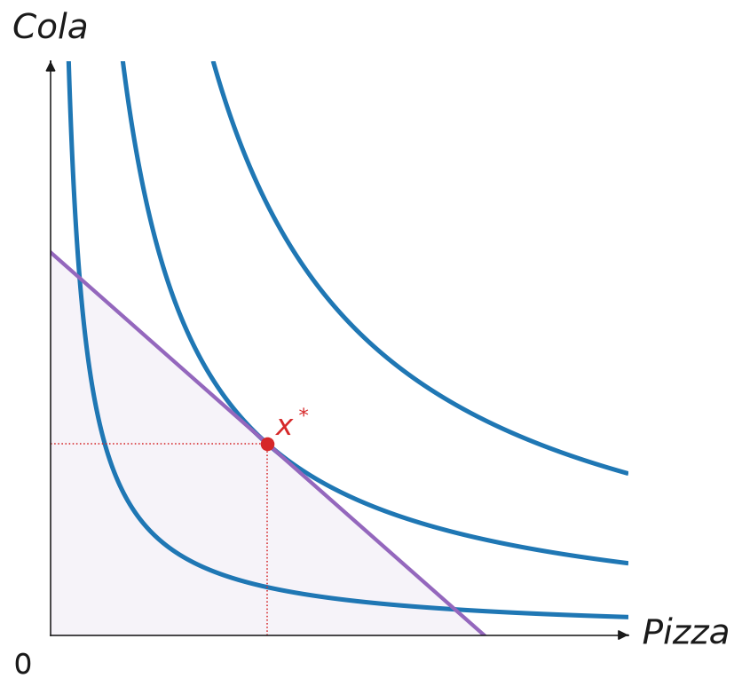
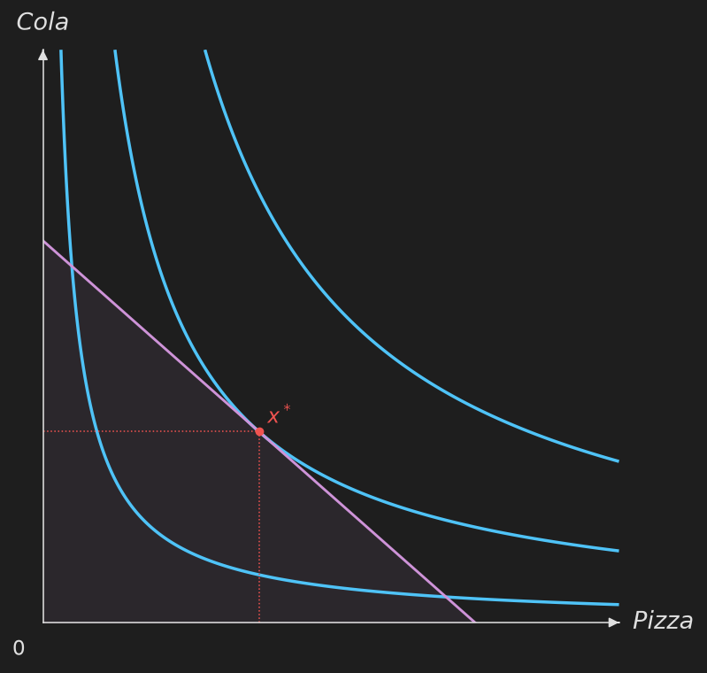

主題
主題控制 Canvas 使用的所有顏色與線條粗細。

內建主題
Default
預設主題的顏色取自一組色盲友善的配色（thriveth, 2014），可從 themes.COLORBLIND_CYCLE_HEX 與 themes.COLORBLIND_CYCLE_RGB 取得。經濟學教學大量依賴圖形，因此不應只靠顏色傳達意義，以免視覺障礙的學生無法辨識（Kugler & Andrews, 1996）。
Nord
Nord 主題使用 Nord 配色，以冷色藍與低飽和色調為主，適合學術簡報。

Paper
Paper 主題使用較細的線條、較小的標記，以及節制的字級，背景透明，適合印刷或期刊排版對墨量與版面較敏感的場合。

Monochrome
Monochrome 主題完全不使用顏色，所有元素都是灰階，改以線條樣式區分曲線、預算線與射線，並以標記形狀區分不同的點。適合黑白列印，或需要完全不依賴顏色辨識的色盲友善場合。

Presentation
Presentation 主題使用較大的文字、較粗的線條與較大的標記，適合投影幕或演講廳等需要遠距離辨識的場合。

Dark
Dark 主題使用深色背景搭配淺色前景，適合深色模式的投影片或網站。

自訂主題
建構子可以只傳入想改的欄位，其他保留內建預設值：
from econ_viz import Theme
my_theme = Theme(
name="custom",
axis_color="#333333",
label_color="#333333",
ic_color="#2563eb",
ic_linewidth=1.5,
budget_color="#dc2626",
eq_color="#16a34a",
eq_markersize=6.0,
)
cvs = Canvas(x_max=20, y_max=15, theme=my_theme)
圖上每一條線、每一種標記、填色、標籤與 legend，也都有一個由上面欄位組成的整體預設值，例如 theme.ic_stroke、theme.eq_marker、theme.point_label。如果想整組改（例如讓 Edgeworth 箱形圖的 core 段除了顏色，還要有箭頭），可以繼承 Theme 並覆寫該屬性：
from econ_viz import ArrowStyle, Stroke, Theme
class MyTheme(Theme):
@property
def core_stroke(self) -> Stroke:
return Stroke(width=3.0, color="#C0392B", arrow=ArrowStyle.TRIANGLE)
cvs = EdgeworthBox(..., theme=MyTheme(name="my-theme"))
方法明確傳入的參數（例如 add_core(stroke=...)）仍然優先於主題，主題則優先於內建預設值，跟設定檔的優先順序一致。
主題欄位
| 欄位 | 說明 |
|---|---|
name |
主題名稱 |
axis_color |
座標軸與箭頭的顏色 |
label_color |
座標軸標籤與原點標籤的顏色 |
ic_color、ic_linewidth |
無異曲線的顏色與線寬 |
secondary_ic_color、secondary_ic_linewidth、secondary_ic_opacity |
強調主要效用水準時，其餘淡化曲線的顏色、線寬與不透明度 |
path_color、path_linewidth |
PCC / ICC 路徑的顏色與線寬 |
budget_color、budget_linewidth |
預算線的顏色與線寬 |
budget_fill_alpha |
可行集合陰影的不透明度 |
eq_color、eq_markersize |
均衡點的顏色與大小 |
ray_color、ray_linewidth |
擴張路徑射線的顏色與線寬 |
kink_color |
拗折點標記的顏色 |
sub_effect_color、inc_effect_color |
替代效果、所得效果箭頭的顏色 |
effect_arrow_linewidth |
效果箭頭的線寬 |
compensated_budget_color、compensated_budget_linewidth、compensated_budget_linestyle |
分解圖中補償後預算線的樣式 |
subsistence_color、subsistence_linewidth |
Stone-Geary 最低消費參考線 |
contract_color、contract_linewidth |
Edgeworth 契約曲線 |
core_color、core_linewidth |
Edgeworth core |
price_color、price_linewidth |
Edgeworth 價格線 |
walrasian_color、walrasian_markersize |
Edgeworth Walrasian 均衡點標記 |
axis_stroke、drop_stroke、projection_stroke、guide_stroke、box_stroke |
沒有各自顏色／線寬欄位的線條 |
樣式屬性
以下每個屬性都是由上面的欄位組成的 Stroke、Marker、Label、Fill 或 Legend。在子類別中覆寫某個屬性，會影響所有沒有另外傳入該項目參數的圖形；設定檔的 [stroke.<name>]、[marker.<name>]、[label.<name>]、[fill.<name>] 段落設定的正是同一批屬性。
| 種類 | 屬性 |
|---|---|
| Stroke | ic_stroke、secondary_ic_stroke、budget_stroke、ray_stroke、path_stroke、compensated_budget_stroke、final_budget_stroke、substitution_stroke、income_stroke、subsistence_stroke、contract_stroke、core_stroke、price_stroke、axis_stroke、drop_stroke、projection_stroke、guide_stroke、box_stroke |
| Marker | eq_marker、point_marker、kink_marker、bliss_marker、path_marker、core_marker、endowment_marker、walrasian_marker |
| Label | axis_label、origin_label、title_label、box_label、effect_label、point_label、bundle_label、bliss_label、ic_label、edgeworth_label |
| Fill | budget_fill |
| Legend | legend |